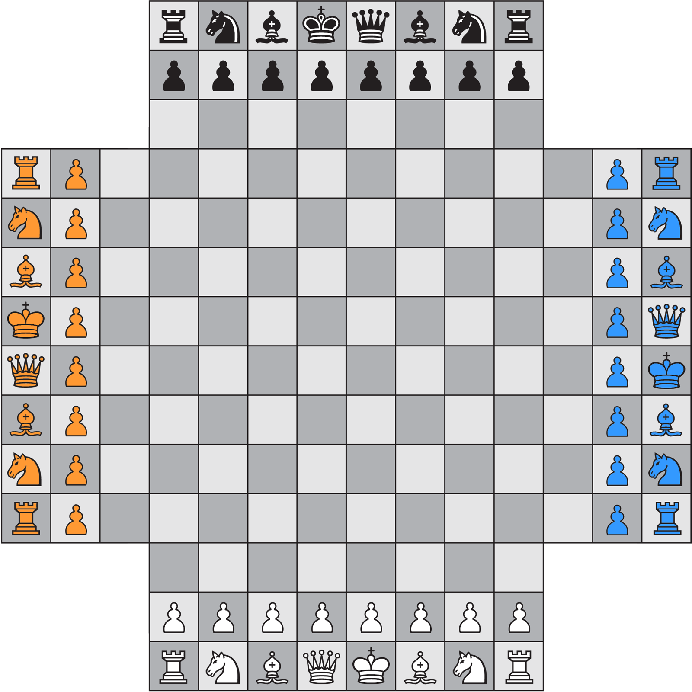
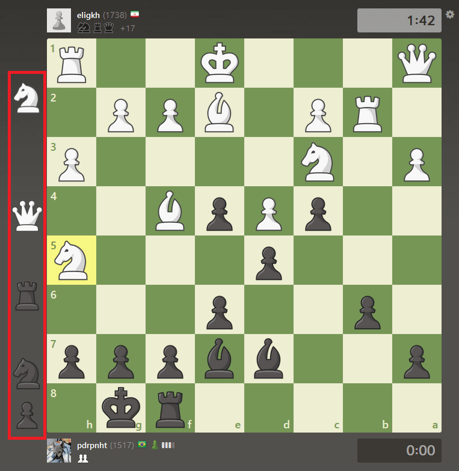

4 player chess is essentially the normal rules of a traditional game, however, four sets of pieces are on the board, meaning that four separate players can play one game. This game is often less tactical than normal chess as each player's moves are separated by three other moves. This means predicting an endgame is almost impossible if the entire game can change without your control. Furthermore, it is often challenging to actually make much change, as opening up your position makes you significantly more vulnerable, since one can be attacted from the front and both sides. This leads to a somewhat closed up game where everyone stalls in hopes of another making a blunder that can be exploited by all three others.
 Play hereCrazyhouse is a two player version of the popular game bughouse. In crazyhouse, when one takes a piece from the other side, they are allowed to place it anywhere on the board, acting on the placer's side. This leads to some very interesting tactics where extreme agression can lead to early checkmates. The best strategy in crazyhouse is to keep a network of pieces connected, as attacks are oftentimes more quick and therefore open positions makes them significantly more dangerous
 Play here